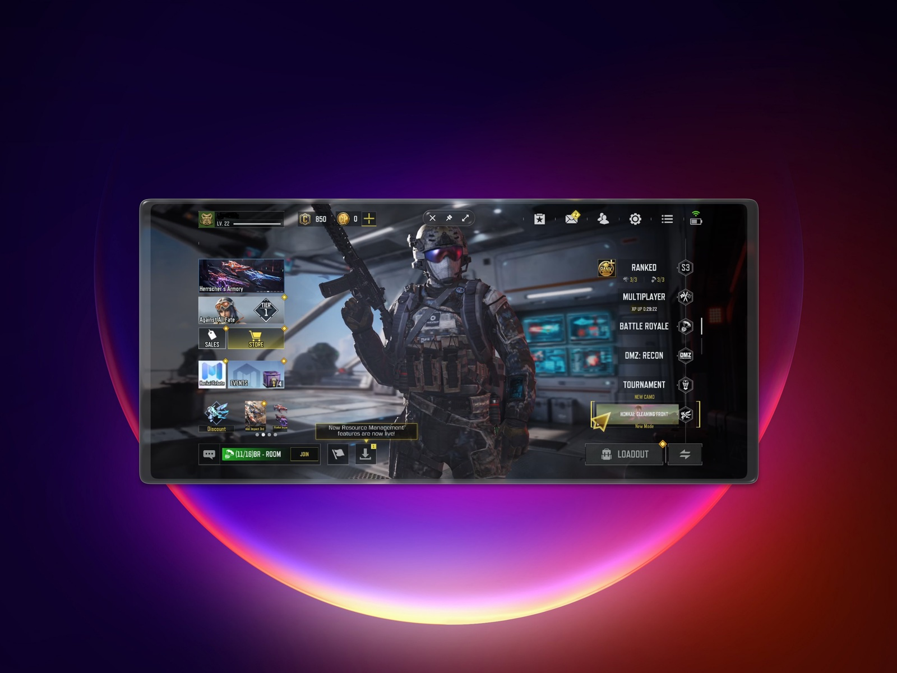

An AirServer alternative for Windows: AirGlass
AirServer is a well-known AirPlay, Google Cast and Miracast receiver with a 30-day trial and a $19.99 consumer licence. If you only need AirPlay from iPhone, iPad and Mac, AirGlass does that for free, and it's open source.

| App | Price | Free use | Open source | Also does |
|---|---|---|---|---|
| AirGlass | Free. Optional one-time Pro, $9.99, for up to 3 PCs | Unlimited, no watermark | Yes (GPL-3.0) | Lossless AirPlay music, bit-for-bit; recording, drawing, OBS mode and two devices at once in Pro |
| AirServer | $19.99 one-time consumer licence | 30-day fully-featured trial, then paid | No | Google Cast, Miracast, several senders at once |
AirServer's prices and trial terms are from airserver.com, checked 16 November 2026. They can change; check before you buy.
Where AirGlass is a better fit
Free, permanently, not a trial
AirServer's trial is fully featured but runs out after 30 days. AirGlass's free edition — full-screen mirroring and lossless AirPlay music — has no time limit at all; you only pay if you want the floating window and its extras.
Open source
AirGlass's source is on GitHub under the GPL-3.0 licence. AirServer is closed source.
A lower one-time price, if AirPlay is all you need
AirGlass Pro is $9.99 once, covering up to 3 PCs. AirServer's consumer licence is $19.99 per licence. The difference is scope, not just price: AirServer's licence also buys Google Cast and Miracast receiving and several senders mirroring at once, which AirGlass doesn't do.
Where AirServer might fit better
If you need to receive from Android or Chrome (Google Cast) or from Windows laptops (Miracast), or want more than two senders on screen together, AirServer covers those and AirGlass doesn't. AirGlass is deliberately AirPlay-only: iPhone, iPad and Mac, mirroring and lossless music, nothing else.
Free, no watermark, no time limit. Pro is a one-time $9.99.
Download AirGlassQuestions
Is there a free alternative to AirServer for Windows?
Yes. AirGlass's free edition mirrors full screen with no time limit and no watermark. AirServer's consumer licence is $19.99 after a 30-day fully-featured trial.
Is AirGlass open source like AirServer isn't?
Yes, AirGlass is open source under the GPL-3.0 licence, with the full source on GitHub. AirServer is closed source.
Does AirGlass support Google Cast or Miracast like AirServer?
No. AirGlass is an AirPlay-only receiver for iPhone, iPad and Mac. AirServer additionally supports Google Cast and Miracast, so if you need to cast from Android or a Windows laptop too, AirServer covers more ground.
What does AirGlass Pro cost compared with AirServer?
AirGlass Pro is a one-time $9.99 for up to 3 PCs. AirServer's consumer licence is $19.99 one-time per licence, after a 30-day trial.
New to AirPlay on Windows? Read how to AirPlay to Windows 11 and 10, or see the full comparison with LonelyScreen, Reflector and 5KPlayer too.